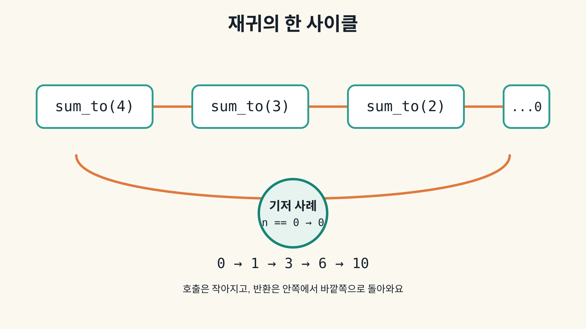

재귀: 줄이고, 멈추고, 돌아와요
함수가 자기 자신을 더 작은 입력으로 다시 호출하고, 기저 사례에서 멈춘 뒤 반환값을 합치는 흐름을 trace로 따라가요.
호출 기록 따라가기
0 → 1 → 3 → 6 → 10 순서로 펼쳐지고, sum_to(4)의 결과는 10이에요.실행 계약
def sum_to(n):
if n < 0 or n > 8:
raise ValueError("bounded n")
if n == 0:
return 0
return n + sum_to(n - 1)입력은 0 ≤ n ≤ 8로 제한하고, n == 0이 기저 사례예요. 더 작은 호출이 먼저 반환된 뒤 현재 값이 더해져요. 반복문 대안은 추가 재귀 호출을 만들지 않아요.
호출 → 기저 → 반환

경계 질문
- 기저 사례가 없으면 왜 계속 호출될까요?
- 기저 사례를 빼도 범위 검사를 남기면 입력 오류로 멈추고, 검사까지 빼면 재귀 제한에 닿는 이유는 무엇일까요?
n=0에서도 호출 수와 깊이를 왜 하나로 세나요?- 큰 입력에서는 재귀와 반복문 중 무엇을 선택할까요?
장난감 범위에서도 호출 수와 깊이는 n+1이고 O(n)이에요. 범위 제한을 없앤 일반 선형 재귀도 같은 식이지만, 실제 호출 스택은 유한해요.
이 오프라인 companion은 source trace 확인용이에요. TTS, 렌더, 듣기, 학습 효과, 게시 상태를 측정하지 않아요.
수업 설명과 코드 내려받기
Python · C++17 · 전체 실습 소스 ZIP
재귀 수업 노트
수업 목표
이 수업을 끝내면 다음을 말하고 직접 따라 할 수 있어요.
- 재귀를 문제를 조금 줄인 뒤 자기 자신을 다시 호출하는 방법으로 설명해요.
- 함수, 인수, 반환, 조건, 호출 기록을 구분해요.
sum_to(4)의 호출 → 기저 사례 → 반환 펼치기를 따라가요.- 재귀 호출이 매번
n을 하나씩 줄이는 이유와, 기저 사례가 없을 때의 위험을 설명해요. - 호출 횟수와 최대 깊이가 입력
n에 대해O(n)이고,n=0에서도 호출 하나가 있다는 것을 확인해요. - 반복문 대안과 언어의 재귀 제한, 스택 오버플로 경계를 구분해요.
쉬운 정의
재귀는 함수가 자기 자신을 다시 부르는 방법이에요. 단, 같은 일을 무한히 반복하지 않도록 문제를 더 작은 입력으로 줄이고, 멈출 조건을 함께 적어야 해요.
이 수업의 함수 sum_to(n)은 n부터 0까지 더해요. 입력은 장난감 예제 범위인 0 <= n <= 8로 제한해요. 음수와 제한을 넘는 값은 거부해요.
- 함수: 이름을 붙인 작업 묶음이에요.
- 인수: 함수를 부를 때 넘기는 입력값이에요. 여기서는
n이 인수예요. - 반환: 함수가 계산을 마치고 호출한 곳으로 돌려주는 값이에요.
- 조건: 어떤 경우에 어떤 경로를 택할지 정하는
if문이에요. - 호출 기록: 함수가 어떤 인수로 불렸는지 순서대로 적은 기록이에요.
- 기저 사례: 더 작은 호출을 만들지 않고 끝내는 조건이에요.
- 호출 스택: 아직 끝나지 않은 호출과 대기 중인 계산을 쌓아 두는 자리예요.
sum_to(n)은 n이 0이면 바로 0을 반환해요. 이것이 기저 사례예요. n이 양수이면 n + sum_to(n - 1)을 계산해요. n - 1이므로 다음 호출의 입력은 반드시 작아져요.
구체적인 예
sum_to(4)는 한 번에 답을 알기보다 다음 문제로 줄여요.
sum_to(4) → 4 + sum_to(3) → 4 + 3 + sum_to(2) → 4 + 3 + 2 + sum_to(1) → 4 + 3 + 2 + sum_to(0)
sum_to(0)은 기저 사례이므로 0을 반환해요. 이제 돌아오면서 1 + 0, 2 + 1, 3 + 3, 4 + 6을 계산해 최종 결과 10을 만들어요.
sum_to(0)은 호출 한 번으로 끝나요. 호출 수와 최대 깊이는 n=0에서 1이고, 일반적으로 n+1이에요. 그래서 이 제한된 선형 재귀에서는 호출 수와 깊이가 O(n)이에요.
호출과 반환의 원리
호출할 때는 현재 인수와 아직 끝나지 않은 계산을 호출 기록과 호출 스택에 남겨요. sum_to(4)는 sum_to(3)의 반환값을 기다리며 잠시 멈춰 있어요. sum_to(0)에 도착하면 더 작은 호출을 만들지 않고 반환해요.
반환은 가장 안쪽 호출부터 바깥쪽으로 진행해요.
| 순서 | 호출 | 반환 또는 대기 중인 계산 |
|---|---|---|
| 1 | sum_to(4) |
4 + 뒤에서 올 값을 기다려요 |
| 2 | sum_to(3) |
3 + 뒤에서 올 값을 기다려요 |
| 3 | sum_to(2) |
2 + 뒤에서 올 값을 기다려요 |
| 4 | sum_to(1) |
1 + 뒤에서 올 값을 기다려요 |
| 5 | sum_to(0) |
기저 사례로 0 반환 |
| 6 | sum_to(1) |
1 + 0 = 1 반환 |
| 7 | sum_to(2) |
2 + 1 = 3 반환 |
| 8 | sum_to(3) |
3 + 3 = 6 반환 |
| 9 | sum_to(4) |
4 + 6 = 10 반환 |
기저 사례를 빼면
if n == 0: return 0을 빼면 양수 입력은 계속 sum_to(n - 1)을 부르다가 음수까지 내려가요. 기저 사례를 빼도 현재 코드의 범위 검사를 남기면 음수 호출에서 입력 오류가 나요. 범위 검사까지 빼고 음수 입력을 막지 않으면 언어의 재귀 제한이나 호출 스택 오버플로로 중단될 수 있어요. 기저 사례는 장식이 아니라 종료를 보장하는 조건이에요.
이 패키지는 입력을 작게 제한하지만, 실제 언어의 재귀 제한이나 호출 스택 크기가 무한하다는 뜻은 아니에요. 큰 입력은 반복문으로 바꾸거나 명시적인 자료구조로 관리할 수 있어요.
실제 코드
Python과 C++17은 같은 계약을 실행해요. 둘 다 먼저 0 <= n <= 8 범위를 검사하고, n == 0을 기저 사례로 처리해요.
def sum_to(n):
if n < 0 or n > 8:
raise ValueError("bounded n")
if n == 0:
return 0
return n + sum_to(n - 1)
반복문 대안은 호출 기록을 만들지 않고 누적값을 갱신해요.
def iterative_sum_to(n):
if n < 0 or n > 8:
raise ValueError("bounded n")
total = 0
for value in range(n + 1):
total += value
return total
재귀 버전은 구조가 문제 정의와 닮아 있어 호출과 반환을 보여 주기 좋아요. 반복문 버전은 호출 깊이를 사용하지 않아 입력이 커질 때 더 안전한 선택이 될 수 있어요. 둘의 결과는 이 범위에서 같아야 해요.
경계와 복잡도
n=0에서는 호출 하나와 깊이 하나가 있어요. n=4에서는 4,3,2,1,0 다섯 호출이 있어요. 이 장난감 범위에서도 허용된 입력의 호출 수와 최대 깊이는 n+1이에요. 범위 제한을 없애고 n>=0을 허용하는 일반 선형 재귀도 호출 수와 최대 깊이가 n+1, 즉 O(n)이에요. 각 호출의 덧셈을 한 번으로 세면 시간도 O(n)이에요.
여기서 O(n)은 무한 입력을 허용한다는 뜻이 아니에요. 실제 Python 재귀 제한과 C++ 실행 환경의 호출 스택은 유한해요. 이 예제는 n을 0 이상 8 이하로 제한해 경계를 명시해요.
전이 연습
sum_to(3)을 먼저 예측해 보세요. 호출 기록은 3,2,1,0이고, 반환은 0, 1, 3, 6 순서예요. 반복문으로 같은 값을 얻어도 재귀의 호출 → 기저 사례 → 반환 흐름을 설명할 수 있어야 해요.
수업 경계
이 패키지는 재귀 호출 기록과 반환 계산을 실제 Python·C++17 실행으로 확인해요. lesson.html은 네트워크 없이 trace를 한 단계씩 살펴보는 학습 보조물이에요. source PASS는 코드·trace·문서 구조의 증거이지, TTS, 렌더, 미디어 시청, 듣기, 학습 효과, 게시 성공을 의미하지 않아요.